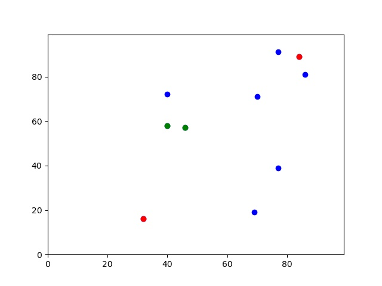
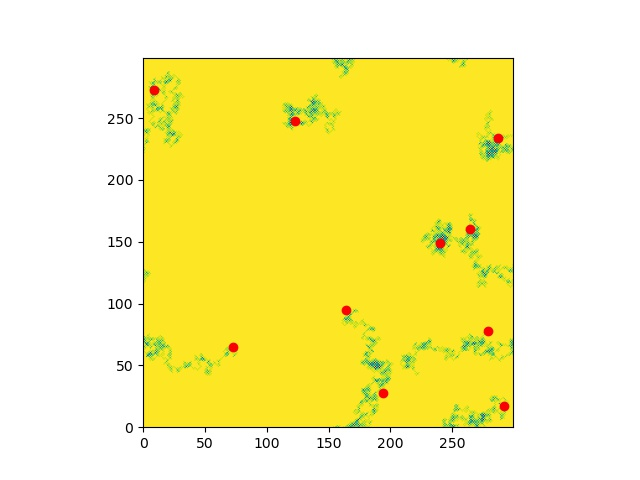
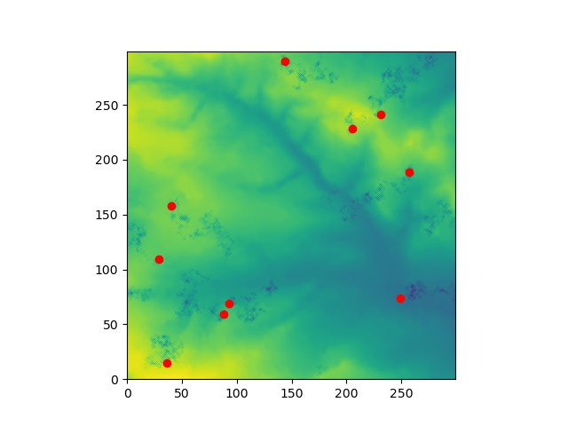
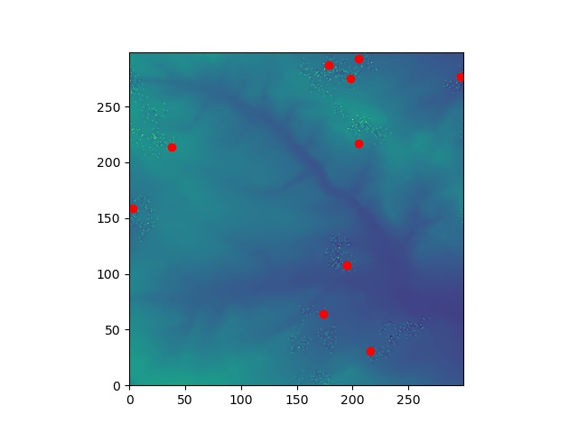
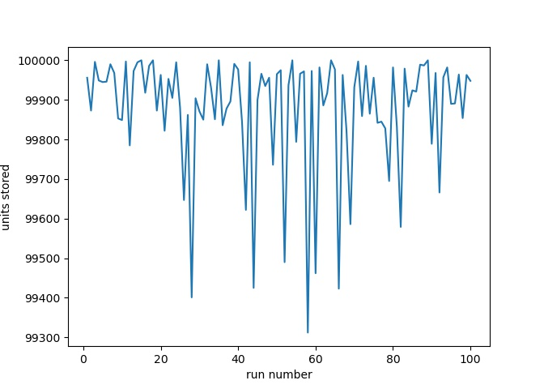
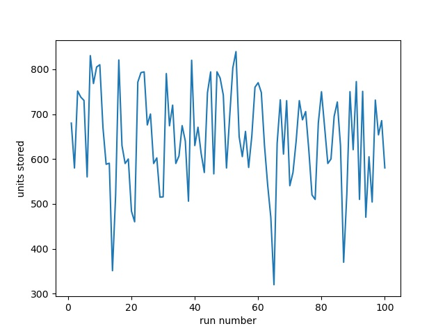
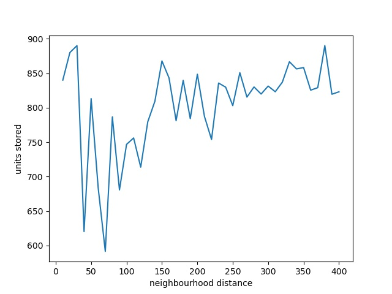
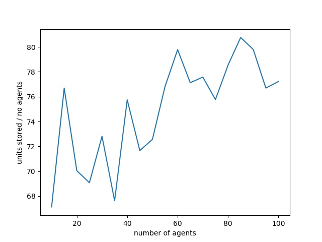

The Agents project uses object orientated python to creat an Agent which has a simple x and y coordinate. When an Agent is created it is initialised with a random x and y integer coordinate between 0 and 99. The model cycles through a number of iteration steps. For each iteration the Agent is randomly moved by +/- 1 unit in each direction. The agent must stay within the bounds of the model 0-99. If the agent steps below 0 its position is shifted to 99. If the agent steps above 99 its position is shifted to 0. After all the iterations are complete the final distance between all the agents is calculated. The final agent positions are plotted using a Matplotlib scatter plot. The two closest Agents and the two furthest Agents are highlighted on the scatterplot.
The main program is in model.py. The module containg the Agent class is in agentframework.py

The image shows the model output, with 10 agents after 1000 iterations. The green dots are the two closest agents, the red dots the furthest.
This model extends the functionality of the Agents model. This time an environment grid is initially read-in from the in.txt file. As an agent moves it eats the environment where it lands, 10 units at a time. If there are less than 10 environment units left when the agent lands it eats them all. Each agent also stores the value of how much it has eaten. If the agent eats more than 100 units it sicks them up where it is.
The final environment data (after it has been eaten by the agents) is written to a comma separated file called environment.txt.
Another file is written, store.txt, which shows the total amount eaten by all the agents. This file is appended to every time the model is run.
The print command for agents is overridden so that when you type "print(agents[x])" the agent location and store is printed.
Each agent now determines the size of the environment and makes sure it stays within that area.
The program plots the final agent positions after all the iterations and the final environment data.
The main program is in eating.py. The module containing the Agent class is in agentframework.py

A test model output, with 10 agents after 1000 iterations. A flat environment was used to highlight the agents movement and eating. The agents are not being sick.

A model output with 10 agents after 1000 iterations moving over the environment and eating. The agents are not being sick.

A model output with 10 agents after 1000 iterations moving over the environment and eating. The agents are eating the environment and being sick after they have eaten more than 100 units.
In this model we add sharing. If an agent comes within a predefined distance (the neighbourhood) to any other agent then they both share their total store. The agents are shuffled before each iteration to avoid any unwanted effects due to the running order (model artifacts). We also include the ability to run the model in batch mode, i.e. run the model many times with varying input parameters. The main program is in comm.py, the module containing the Agent class and methods is in agentframework.py. The program to run in batch mode using subprocess.call() is in sprocess.py.

The model is run 100 times with the same input: no_of_agents = 10, no_of_iterations = 1000, neighbourhood distance = 40. The graph shows the total stored by all agents against the model run. Maximum possible store for 10 agents with 1000 iteration and eating 10 units for each move is 100,000. If an agent moves to a place that has been completely eaten the total will be less than 100,000. In this model the agents are not being sick. This shows the random variability of the model depending upon the agent starting positions and the random movement of each agent.

As before, the model is run 100 times with the same input: no_of_agents = 10, no_of_iterations = 1000, neighbourhood distance = 40. The graph shows the total stored by all agents against the model run. This time the agents are sick if they eat more than 100 units. Now the total theoretical maximum store is 1000 units. Again, there is a high random variation for models with the same input parameters.

This time we vary the input parameters but run each model only once. Neighbourhood distance is increased from 10 to 400 in steps of 10. Each model has 10 agents and 1000 iterations.

Number of agents is increased from 10 to 100 in steps of 5. Each model has 1000 iterations and a neighbourhood distance of 40. The average store per agent increases because more sharing is going on with more agents.